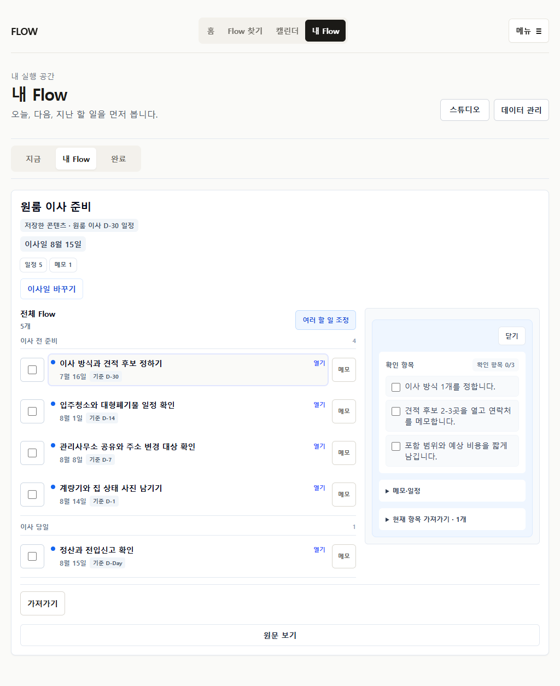
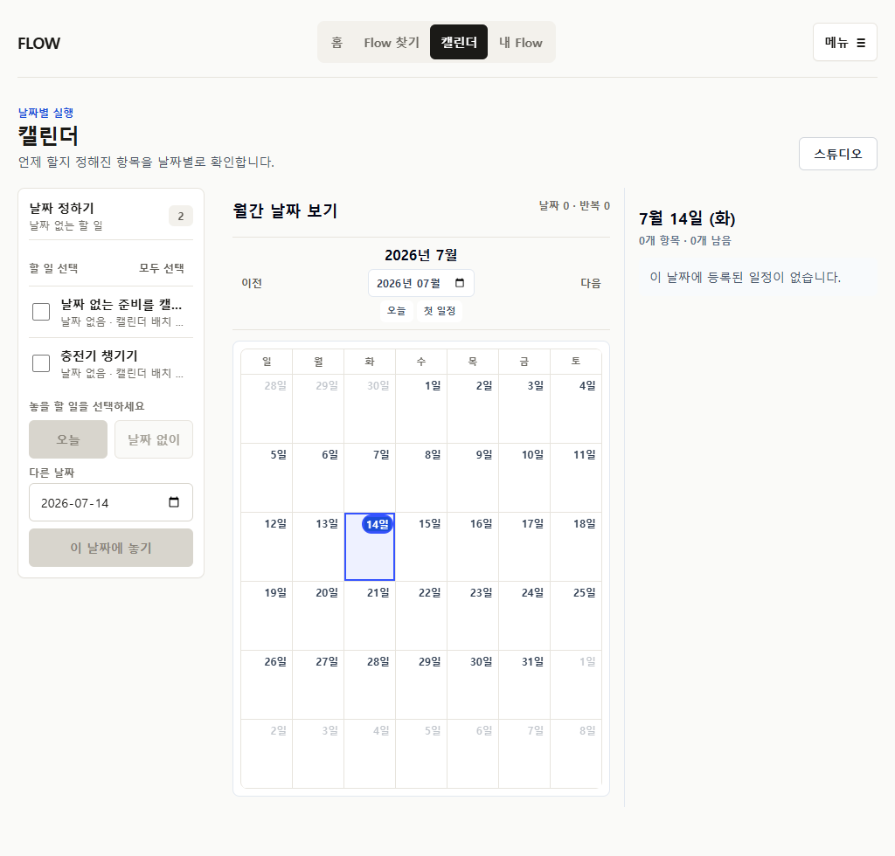
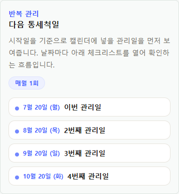
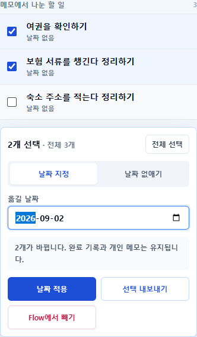
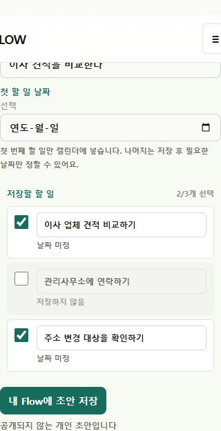
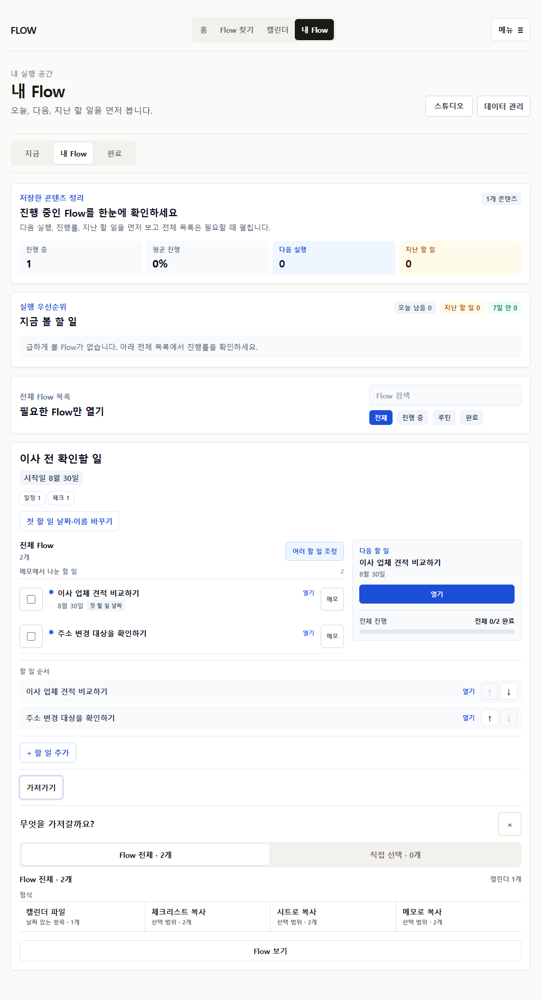
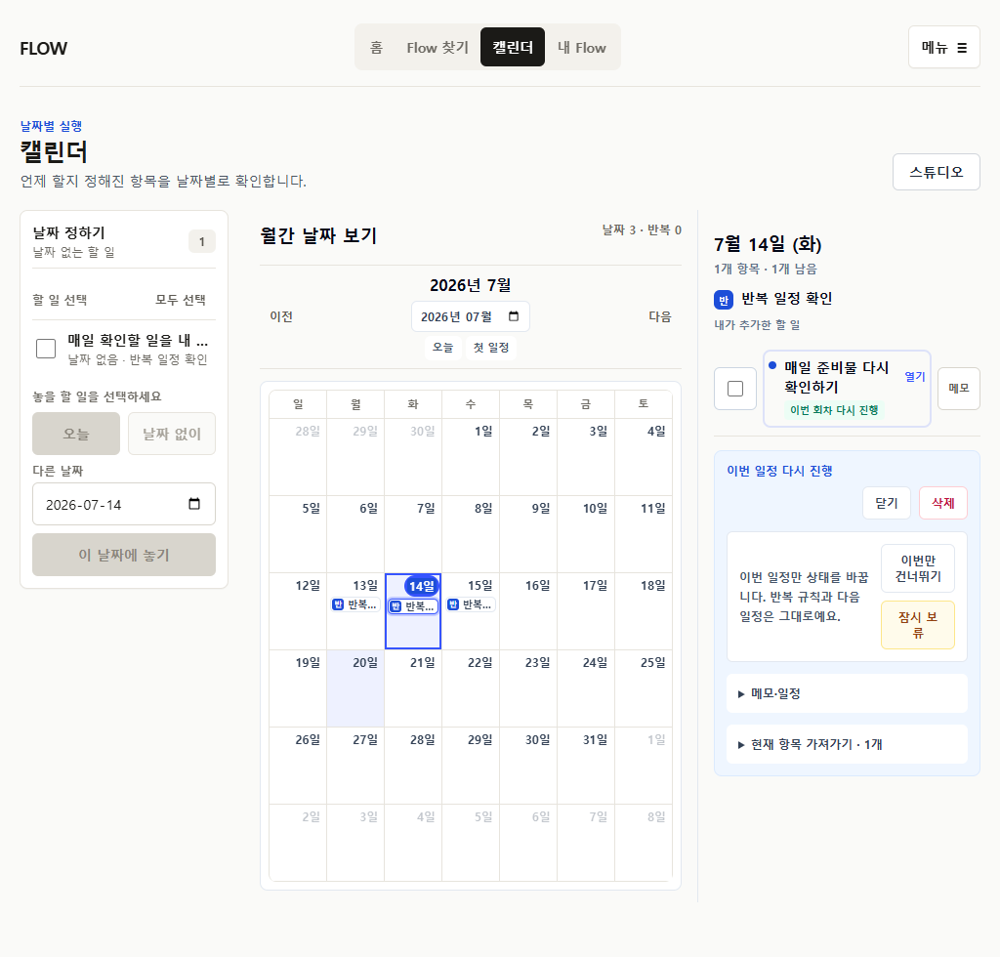

이사 준비 전체 Flow
저장 직후와 재방문 모두 다섯 실행 항목을 같은 구조로 보여주고, 완료 후 다시 미완료로 돌릴 수 있다.
SUPPORTED

여섯 가지 Flow 형태를 저장, 전체 확인, 개인 조정, 실행, Calendar 배치, 완료·재개, export까지 다시 연결했다. 이 보드는 현재 브라우저·자동화·시각 검토 결과이며 실제 사용자 관찰 결과가 아니다.
자동화 기준 Blocking/High는 남아 있지 않다. 첫 통합 캡처에서 발견한 1024px Calendar 제목 붕괴는 반복 상태를 제목 아래 메타로 이동해 수정했고, 제목 최소 너비 회귀 테스트를 추가했다.
다만 public 설명 밀도, 1024px Calendar의 세 영역 밀도, 개인 초안 고급 편집 깊이는 실제 이해 가능성을 자동화로 확정할 수 없다. 다음 단계는 production 배포나 사용자 모집이 아니라 owner/Claude Design의 keep / change / defer 결정이다.
반복 상태 badge가 제목 폭을 잠식하던 문제를 메타 영역으로 이동했다. wide agenda title 최소 100px을 테스트한다.
preview가 읽기 전용 artifact로 정리됐지만 반복 Flow의 안내 문장은 아직 두 줄 이상이다. 이해에 필요한 정보인지 판단이 필요하다.
날짜·시간·소요 시간·반복·회차를 모두 지원하지만 전체 편집 경로는 길다. progressive disclosure의 실제 이해 가능성은 미검증이다.
저장 직후와 재방문 모두 다섯 실행 항목을 같은 구조로 보여주고, 완료 후 다시 미완료로 돌릴 수 있다.
SUPPORTED
날짜 없는 할 일은 My Flow에 남고, Calendar queue에서는 완료가 아니라 선택·배치만 수행한다.
SUPPORTED
public은 네 회차를 읽기 전용으로 예고하고, 저장 후 각 회차에 하나의 완료 컨트롤만 제공한다.
SUPPORTED

조정 모드에서는 완료 컨트롤을 선택 컨트롤로 교체하고, 영향 개수와 export 범위를 먼저 보여준다.
SUPPORTED

세 문장을 검토하고 두 항목만 저장한 뒤, 저장·새로고침·전체/선택 export가 같은 개수를 유지한다.
SUPPORTED

완료·재개·건너뜀·보류를 구분하고, 보류 회차는 일반 실행에서 숨기되 같은 ID로 복구한다.
SUPPORTED
| 표면 | 1차 역할 | 현재 계약 | 남은 판단 |
|---|---|---|---|
| Public | 전체 artifact 예측과 저장 결정 | 읽기 전용 preview, Flow 단위 저장 | 설명 문장 추가 감축 |
| 저장 직후 | 저장 결과 확인 | 전체 Flow outline 즉시 노출 | 없음 |
| My Flow | 지금 실행하고 전체 구조 열기 | 오늘/날짜 없음 실행, 전체 Flow drill-in | 고급 편집 깊이 |
| Calendar | 날짜별 실행과 날짜 배치 | dated agenda + undated placement queue | 1024px 세 영역 밀도 |
| Export | 범위 선택 후 형식 선택 | 전체/선택/현재 항목과 exact count | 실제 외부 도구 import는 별도 검증 |
확인됨: 현재 branch production-mode browser, Playwright interaction, 다운로드 내용, 현재 명령 결과, 390px/1024px 시각 검사.
확인되지 않음: 처음 보는 사용자의 이해, 반복 사용 습관, 실제 Calendar 앱 import, 관찰 세션. 실제 사용자 수는 0명이다.